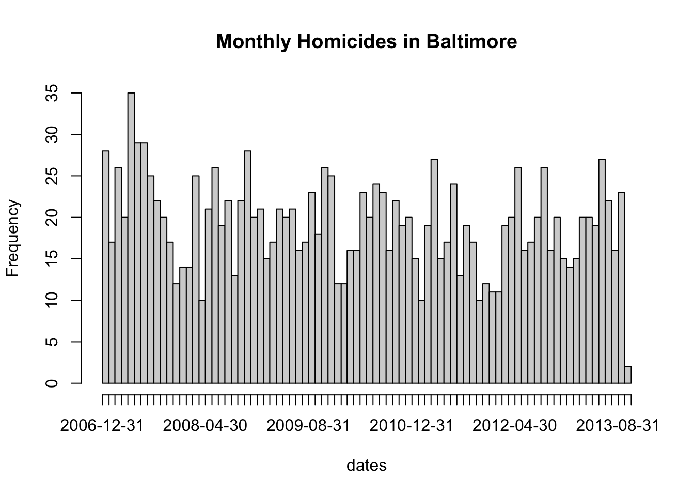

Regular Expressions
Watch a video of this chapter
Before You Begin
If you want a very quick introduction to the general notion of regular expressions and how they can be used to process text (as opposed to how to implement them specifically in R), you should watch this lecture first.
Primary R Functions
The primary R functions for dealing with regular expressions are
grep(), grepl(): These functions search for matches of a regular expression/pattern in a character vector. grep() returns the indices into the character vector that contain a match or the specific strings that happen to have the match. grepl() returns a TRUE/FALSE vector indicating which elements of the character vector contain a match
regexpr(), gregexpr(): Search a character vector for regular expression matches and return the indices of the string where the match begins and the length of the match
sub(), gsub(): Search a character vector for regular expression matches and replace that match with another string
regexec(): This function searches a character vector for a regular expression, much like regexpr(), but it will additionally return the locations of any parenthesized sub-expressions. Probably easier to explain through demonstration.
For this chapter, we will use a running example using data from homicides in Baltimore City. The Baltimore Sun newspaper collects information on all homicides that occur in the city (it also reports on many of them). That data is collected and presented in a map that is publically available. I encourage you to go look at the web site/map to get a sense of what kinds of data are presented there. Unfortunately, the data on the web site are not particularly amenable to analysis, so I’ve scraped the data and put it in a separate file. The data in this file contain data from January 2007 to October 2013.
Here is an excerpt of the Baltimore City homicides dataset:
> homicides <- readLines("homicides.txt")
>
> ## Total number of events recorded
> length(homicides)
[1] 1571
> homicides[1]
[1] "39.311024, -76.674227, iconHomicideShooting, 'p2', '<dl><dt>Leon Nelson</dt><dd class=\"address\">3400 Clifton Ave.<br />Baltimore, MD 21216</dd><dd>black male, 17 years old</dd><dd>Found on January 1, 2007</dd><dd>Victim died at Shock Trauma</dd><dd>Cause: shooting</dd></dl>'"
> homicides[1000]
[1] "39.33626300000, -76.55553990000, icon_homicide_shooting, 'p1200', '<dl><dt><a href=\"http://essentials.baltimoresun.com/micro_sun/homicides/victim/1200/davon-diggs\">Davon Diggs</a></dt><dd class=\"address\">4100 Parkwood Ave<br />Baltimore, MD 21206</dd><dd>Race: Black<br />Gender: male<br />Age: 21 years old</dd><dd>Found on November 5, 2011</dd><dd>Victim died at Johns Hopkins Bayview Medical Center </dd><dd>Cause: Shooting</dd><dd class=\"popup-note\"><p>Originally reported in 5000 Belair Road; later determined to be rear alley of 4100 block Parkwood</p></dd></dl>'"
The data set is formatted so that each homicide is presented on a single line of text. So when we read the data in with readLines(), each element of the character vector represents one homicide event. Notice that the data are riddled with HTML tags because they were scraped directly from the web site.
A few interesting features stand out: We have the latitude and longitude of where the victim was found; then there’s the street address; the age, race, and gender of the victim; the date on which the victim was found; in which hospital the victim ultimately died; the cause of death.
grep()
Suppose we wanted to identify the records for all the victims of shootings (as opposed
to other causes)? How could we do that? From the map we know that for each cause of death there is a different icon/flag placed on the map. In particular, they are different colors. You can see that is indicated in the dataset for shooting deaths with a iconHomicideShooting label. Perhaps we can use this aspect of the data to idenfity all of the shootings.
Here I use grep() to match the literal iconHomicideShooting into the character vector of homicides.
> g <- grep("iconHomicideShooting", homicides)
> length(g)
[1] 228
Using this approach I get 228 shooting deaths. However, I notice that for some of the entries, the indicator for the homicide “flag” is noted as icon_homicide_shooting. It’s not uncommon over time for web site maintainers to change the names of files or update files. What happens if we now grep() on both icon names using the | operator?
> g <- grep("iconHomicideShooting|icon_homicide_shooting", homicides)
> length(g)
[1] 1263
Now we have 1263 shooting deaths, which is quite a bit more. In fact, the vast majority of homicides in Baltimore are shooting deaths.
Another possible way to do this is to grep() on the cause of death field, which seems to have the format Cause: shooting. We can grep() on this literally and get
> g <- grep("Cause: shooting", homicides)
> length(g)
[1] 228
Notice that we seem to be undercounting again. This is because for some of the entries, the word “shooting” uses a captial “S” while other entries use a lower case “s”. We can handle this variation by using a character class in our regular expression.
> g <- grep("Cause: [Ss]hooting", homicides)
> length(g)
[1] 1263
One thing you have to be careful of when processing text data is not not grep() things out of context. For example, suppose we just grep()-ed on the expression [Ss]hooting.
> g <- grep("[Ss]hooting", homicides)
> length(g)
[1] 1265
Notice that we see to pick up 2 extra homicides this way. We can figure out which ones they are by comparing the results of the two expressions.
First we can get the indices for the first expresssion match.
> i <- grep("[cC]ause: [Ss]hooting", homicides)
> str(i)
int [1:1263] 1 2 6 7 8 9 10 11 12 13 ...
Then we can get the indices for just matching on [Ss]hooting.
> j <- grep("[Ss]hooting", homicides)
> str(j)
int [1:1265] 1 2 6 7 8 9 10 11 12 13 ...
Now we just need to identify which are the entries that the vectors i and j do not have in common.
> setdiff(i, j)
integer(0)
> setdiff(j, i)
[1] 318 859
Here we can see that the index vector j has two entries that are not in i: entries 318, 859. We can take a look at these entries directly to see what makes them different.
> homicides[859]
[1] "39.33743900000, -76.66316500000, icon_homicide_bluntforce, 'p914', '<dl><dt><a href=\"http://essentials.baltimoresun.com/micro_sun/homicides/victim/914/steven-harris\">Steven Harris</a></dt><dd class=\"address\">4200 Pimlico Road<br />Baltimore, MD 21215</dd><dd>Race: Black<br />Gender: male<br />Age: 38 years old</dd><dd>Found on July 29, 2010</dd><dd>Victim died at Scene</dd><dd>Cause: Blunt Force</dd><dd class=\"popup-note\"><p>Harris was found dead July 22 and ruled a shooting victim; an autopsy subsequently showed that he had not been shot,...</dd></dl>'"
Here we can see that the word “shooting” appears in the narrative text that accompanies the data, but the ultimate cause of death was in fact blunt force.
When developing a regular expression to extract entries from a large
dataset, it’s important that you understand the formatting of the
dataset well enough so that you can develop a specific expression that
doesn’t accidentally grep data out of context.
Sometimes we want to identify elements of a character vector that match a pattern, but instead of returning their indices we want the actual values that satisfy the match. For example, we may want to identify all of the states in the United States whose names start with “New”.
> grep("^New", state.name)
[1] 29 30 31 32
This gives us the indices into the state.name variable that match, but setting value = TRUE returns the actual elements of the character vector that match.
> grep("^New", state.name, value = TRUE)
[1] "New Hampshire" "New Jersey" "New Mexico" "New York"
grepl()
The function grepl() works much like grep() except that it differs in its return value. grepl() returns a logical vector indicating which element of a character vector contains the match. For example, suppose we want to know which states in the United States begin with word “New”.
> g <- grepl("^New", state.name)
> g
[1] FALSE FALSE FALSE FALSE FALSE FALSE FALSE FALSE FALSE FALSE FALSE FALSE
[13] FALSE FALSE FALSE FALSE FALSE FALSE FALSE FALSE FALSE FALSE FALSE FALSE
[25] FALSE FALSE FALSE FALSE TRUE TRUE TRUE TRUE FALSE FALSE FALSE FALSE
[37] FALSE FALSE FALSE FALSE FALSE FALSE FALSE FALSE FALSE FALSE FALSE FALSE
[49] FALSE FALSE
> state.name[g]
[1] "New Hampshire" "New Jersey" "New Mexico" "New York"
Here, we can see that grepl() returns a logical vector that can be used to subset the original state.name vector.
regexpr()
Both the grep() and the grepl() functions have some limitations. In particular, both functions tell you which strings in a character vector match a certain pattern but they don’t tell you exactly where the match occurs or what the match is for a more complicated regular expression.
The regexpr() function gives you the (a) index into each string where the match begins and the (b) length of the match for that string. regexpr() only gives you the first match of the string (reading left to right). gregexpr() will give you all of the matches in a given string if there are is more than one match.
In our Baltimore City homicides dataset, we might be interested in finding the date on which each victim was found. Taking a look at the dataset
> homicides[1]
[1] "39.311024, -76.674227, iconHomicideShooting, 'p2', '<dl><dt>Leon Nelson</dt><dd class=\"address\">3400 Clifton Ave.<br />Baltimore, MD 21216</dd><dd>black male, 17 years old</dd><dd>Found on January 1, 2007</dd><dd>Victim died at Shock Trauma</dd><dd>Cause: shooting</dd></dl>'"
it seems that we might be able to just grep on the word “Found”. However, the word “found” may be found elsewhere in the entry, such as in this entry, where the word “found” appears in the narrative text at the end.
> homicides[954]
[1] "39.30677400000, -76.59891100000, icon_homicide_shooting, 'p816', '<dl><dt><a href=\"http://essentials.baltimoresun.com/micro_sun/homicides/victim/816/kenly-wheeler\">Kenly Wheeler</a></dt><dd class=\"address\">1400 N Caroline St<br />Baltimore, MD 21213</dd><dd>Race: Black<br />Gender: male<br />Age: 29 years old</dd><dd>Found on March 3, 2010</dd><dd>Victim died at Scene</dd><dd>Cause: Shooting</dd><dd class=\"popup-note\"><p>Wheeler\\'s body was found on the grounds of Dr. Bernard Harris Sr. Elementary School</p></dd></dl>'"
But we can see that the date is typically preceded by “Found on” and is surrounded by <dd></dd> tags, so let’s use the pattern <dd>[F|f]ound(.*)</dd> and see what it brings up.
> regexpr("<dd>[F|f]ound(.*)</dd>", homicides[1:10])
[1] 177 178 188 189 178 182 178 187 182 183
attr(,"match.length")
[1] 93 86 89 90 89 84 85 84 88 84
attr(,"index.type")
[1] "chars"
attr(,"useBytes")
[1] TRUE
We can use the substr() function to extract the first match in the first string.
> substr(homicides[1], 177, 177 + 93 - 1)
[1] "<dd>Found on January 1, 2007</dd><dd>Victim died at Shock Trauma</dd><dd>Cause: shooting</dd>"
Immediately, we can see that the regular expression picked up too much information. This is because the previous pattern was too greedy and matched too much of the string. We need to use the ? metacharacter to make the regular expression “lazy” so that it stops at the first </dd> tag.
> regexpr("<dd>[F|f]ound(.*?)</dd>", homicides[1:10])
[1] 177 178 188 189 178 182 178 187 182 183
attr(,"match.length")
[1] 33 33 33 33 33 33 33 33 33 33
attr(,"index.type")
[1] "chars"
attr(,"useBytes")
[1] TRUE
Now when we look at the substrings indicated by the regexpr() output, we get
> substr(homicides[1], 177, 177 + 33 - 1)
[1] "<dd>Found on January 1, 2007</dd>"
While it’s straightforward to take the output of regexpr() and feed it into substr() to get the matches out of the original data, one handy function is regmatches() which extracts the matches in the strings for you without you having to use substr().
> r <- regexpr("<dd>[F|f]ound(.*?)</dd>", homicides[1:5])
> regmatches(homicides[1:5], r)
[1] "<dd>Found on January 1, 2007</dd>" "<dd>Found on January 2, 2007</dd>"
[3] "<dd>Found on January 2, 2007</dd>" "<dd>Found on January 3, 2007</dd>"
[5] "<dd>Found on January 5, 2007</dd>"
sub() and gsub()
Sometimes we need to clean things up or modify strings by matching a pattern and replacing it with something else. For example, how can we extract the date from this string?
> x <- substr(homicides[1], 177, 177 + 33 - 1)
> x
[1] "<dd>Found on January 1, 2007</dd>"
We want to strip out the stuff surrounding the “January 1, 2007” portion. We can do that by matching on the text that comes before and after it using the | operator and then replacing it with the empty string.
> sub("<dd>[F|f]ound on |</dd>", "", x)
[1] "January 1, 2007</dd>"
Notice that the sub() function found the first match (at the beginning of the string) and replaced it and then stopped. However, there was another match at the end of the string that we also wanted to replace. To get both matches, we need the gsub() function.
> gsub("<dd>[F|f]ound on |</dd>", "", x)
[1] "January 1, 2007"
The sub() andgsub()` functions can take vector arguments so we don’t have to process each string one by one.
> r <- regexpr("<dd>[F|f]ound(.*?)</dd>", homicides[1:5])
> m <- regmatches(homicides[1:5], r)
> m
[1] "<dd>Found on January 1, 2007</dd>" "<dd>Found on January 2, 2007</dd>"
[3] "<dd>Found on January 2, 2007</dd>" "<dd>Found on January 3, 2007</dd>"
[5] "<dd>Found on January 5, 2007</dd>"
> d <- gsub("<dd>[F|f]ound on |</dd>", "", m)
>
> ## Nice and clean
> d
[1] "January 1, 2007" "January 2, 2007" "January 2, 2007" "January 3, 2007"
[5] "January 5, 2007"
Finally, it may be useful to convert these strings to the Date class so that we can do some date-related computations.
> as.Date(d, "%B %d, %Y")
[1] "2007-01-01" "2007-01-02" "2007-01-02" "2007-01-03" "2007-01-05"
regexec()
The regexec() function works like regexpr() except it gives you the indices
for parenthesized sub-expressions. For example, take a look at the following expression.
> regexec("<dd>[F|f]ound on (.*?)</dd>", homicides[1])
[[1]]
[1] 177 190
attr(,"match.length")
[1] 33 15
attr(,"index.type")
[1] "chars"
attr(,"useBytes")
[1] TRUE
Notice first that the regular expression itself has a portion in parentheses (). That is the portion of the expression that I presume will contain the date. In the output, you’ll notice that there are two indices and two “match.length” values. The first index tells you where the overall match begins (character 177) and the second index tells you where the expression in the parentheses begins (character 190).
By contrast, if we only use the regexpr() function, we get
> regexec("<dd>[F|f]ound on .*?</dd>", homicides[1])
[[1]]
[1] 177
attr(,"match.length")
[1] 33
attr(,"index.type")
[1] "chars"
attr(,"useBytes")
[1] TRUE
We can use the substr() function to demonstrate which parts of a strings are matched by the regexec() function.
Here’s the output for regexec().
> regexec("<dd>[F|f]ound on (.*?)</dd>", homicides[1])
[[1]]
[1] 177 190
attr(,"match.length")
[1] 33 15
attr(,"index.type")
[1] "chars"
attr(,"useBytes")
[1] TRUE
Here’s the overall expression match.
> substr(homicides[1], 177, 177 + 33 - 1)
[1] "<dd>Found on January 1, 2007</dd>"
And here’s the parenthesized sub-expression.
> substr(homicides[1], 190, 190 + 15 - 1)
[1] "January 1, 2007"
All this can be done much more easily with the regmatches() function.
> r <- regexec("<dd>[F|f]ound on (.*?)</dd>", homicides[1:2])
> regmatches(homicides[1:2], r)
[[1]]
[1] "<dd>Found on January 1, 2007</dd>" "January 1, 2007"
[[2]]
[1] "<dd>Found on January 2, 2007</dd>" "January 2, 2007"
Notice that regmatches() returns a list in this case, where each element of the list contains two strings: the overall match and the parenthesized sub-expression.
As an example, we can make a plot of monthly homicide counts. First we need a regular expression to capture the dates.
> r <- regexec("<dd>[F|f]ound on (.*?)</dd>", homicides)
> m <- regmatches(homicides, r)
Then we can loop through the list returned by regmatches() and extract the second element of each (the parenthesized sub-expression).
> dates <- sapply(m, function(x) x[2])
Finally, we can convert the date strings into the Date class and make a histogram of the counts.
> dates <- as.Date(dates, "%B %d, %Y")
> hist(dates, "month", freq = TRUE, main = "Monthly Homicides in Baltimore")

We can see from the picture that homicides do not occur uniformly throughout the year and appear to have some seasonality to them.
The stringr Package
The stringr package is part of the tidyverse collection of packages and wraps they underlying stringi package in a series of convenience functions. Some of the complexity of using the base R regular expression functions is usefully hidden by the stringr functions. In addition, the stringr functions provide a more rational interface to regular expressions with more consistency in the arguments and argument ordering.
Given what we have discussed so far, there is a fairly straightforward mapping from the base R functions to the stringr functions. In general, for the stringr functions, the data are the first argument and the regular expression is the second argument, with optional arguments afterwards.
str_subset() is much like grep(value = TRUE) and returns a character vector of strings that contain a given match.
> library(stringr)
> g <- str_subset(homicides, "iconHomicideShooting")
> length(g)
[1] 228
str_detect() is essentially equivalent grepl().
str_extract() plays the role of regexpr() and regmatches(), extracting the matches from the output.
> str_extract(homicides[1:10], "<dd>[F|f]ound(.*?)</dd>")
[1] "<dd>Found on January 1, 2007</dd>" "<dd>Found on January 2, 2007</dd>"
[3] "<dd>Found on January 2, 2007</dd>" "<dd>Found on January 3, 2007</dd>"
[5] "<dd>Found on January 5, 2007</dd>" "<dd>Found on January 5, 2007</dd>"
[7] "<dd>Found on January 5, 2007</dd>" "<dd>Found on January 7, 2007</dd>"
[9] "<dd>Found on January 8, 2007</dd>" "<dd>Found on January 8, 2007</dd>"
Finally, str_match() does the job of regexec() by provide a matrix containing the parenthesized sub-expressions.
> str_match(homicides[1:5], "<dd>[F|f]ound on (.*?)</dd>")
[,1] [,2]
[1,] "<dd>Found on January 1, 2007</dd>" "January 1, 2007"
[2,] "<dd>Found on January 2, 2007</dd>" "January 2, 2007"
[3,] "<dd>Found on January 2, 2007</dd>" "January 2, 2007"
[4,] "<dd>Found on January 3, 2007</dd>" "January 3, 2007"
[5,] "<dd>Found on January 5, 2007</dd>" "January 5, 2007"
Note how the second column of the output contains the values of the parenthesized sub-expressions. We could now obtain these values by extracting the second column of the matrix. If there had been more parenthesized sub-expressions, there would have been more columns in the output matrix.
Summary
The primary R functions for dealing with regular expressions are
grep(), grepl(): Search for matches of a regular expression/pattern in a
character vector
regexpr(), gregexpr(): Search a character vector for regular expression matches and return the indices where the match begins; useful in conjunction withregmatches()`
sub(), gsub(): Search a character vector for regular expression matches and
replace that match with another string
regexec(): Gives you indices of parethensized sub-expressions.
The stringr package provides a series of functions implementing much of the regular expression functionality in R but with a more consistent and rationalized interface.